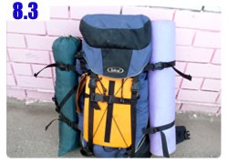

睡醒的時後頭有點痛，夜間的低溫和帳棚內散不出去的濕氣交互作用之下使我有點小感冒，等一下曬個太陽應該就能恢復。
往好處想，睡醒真的不需要收睡袋了，睡前偷懶的計畫成真，輕鬆很多～
想用濕毛巾擦個臉再出發，但水壺裡裝的是果汁茶跟紅糖水，用這兩樣東西來擦臉都不太適合，
只好用昨天擦過全身的微濕毛巾胡亂地抹過臉，早上的盥洗動作就此完畢，睡醒不喜歡洗臉刷牙的小孩也可以這麼做。
離開橋下的時候有兩個選擇，回頭走到昨天的休息區，找間餐廳洗臉和吃飯，或是繼續往下走，看何時能發現另一個休息站。
我選擇後者，只因為往回騎是上坡路，光用看的就很累，而往前騎的話，告示牌說下一個城市在四十九公里之外。
反正告示牌說的是城鎮的位置，又不是休息站的地點，參考看看就好，要是真的這麼倒楣要騎到中午才能洗臉那我也認了。
果不其然，七公里之後就看到大卡車在路邊停得滿滿的，又是另一個休息區，一眼望去都是修車廠、洗車廠之類的招牌。
只看到一棟沒有掛招牌的磚瓦建築物，外頭點綴一些節慶用的小燈泡，猜想這裡應該是餐廳。
進去之後看到這個東西：
你看到什麼，洗手台對吧？我看到的也是洗手台，但這個洗手台對我來說是無比珍貴的存在，免費同時無價。
趁著早上沒多少人光顧餐廳，拿著毛巾就這麼全身擦洗了起來，這陣子都在擦澡，其實比起洗澡也還算蠻舒服的，而且很省事。
穿了一整天汗濕的上衣也簡單地沖個水，跟頭巾以及毛巾一起晾在入口處固定大門的繩索上，吃完飯之後也乾得差不多了。
這一棟沒有招牌的店面真的是餐廳，在這邊大吃了一頓熱食。
有客人點了一盤看起來蠻好吃的東西，我也有樣學樣地跟著點了一盤，結帳的時候發現價錢便宜得不太尋常。
俄羅斯的肉類食品挺不便宜的，一塊肉至少都要五十盧布以上才吃的到，烤肉類的料理一串更是一百五十元上下的高檔價位。
點餐的邏輯大致已經知道，就是先點一樣主菜：比如烤肉、雞腿，然後再點配菜：馬鈴薯泥、通心麵等，配上沙拉、麵包、咖啡、甜點這樣就是一餐了。
今天吃一大塊的肉、配上口感柔順的馬鈴薯泥、水煮蛋配上豌豆的沙拉、一大杯的咖啡和五條麵包，只收了六十八盧布，大概是其它餐廳的半價而已。
等吃了一口肉之後才知道為什麼這麼便宜，這塊並不是牛肉，而是牛肝之類的東西。
吃飯的時候都會灑上很多的調味料，胡椒粉、鹽巴，灑個不停，一整天騎車會流很多的汗，能夠補充鹽分的機會只有利用上餐廳吃飯的時候。
吃喝完畢加上整理遊記的時間，離開餐廳的時候又是中午時分了，每天都起得這麼早，但正式騎車的時候都將近中午，光陰一去不復返。
路旁販賣蔬果的攤販瞬間多了起來，因為旁邊就是農家，家家戶戶庭院裡都種著結實纍纍的蘋果樹，在自家門口擺上椅子跟裝滿蘋果的水桶就可以做生意了。
除了必備的蘋果之外，連帶販賣的蔬果類也很豐富，停下車來正想著要不要買些什麼路上可以當零食。
一個老婆婆看見我就招呼我過去，親切地跟我打招呼，問我要騎去哪裡？
然後拿著塑膠袋裝了三根小黃瓜和四顆蘋果給我，正打算要付錢的時候老婆婆說這是送給我的，不用錢，要是吃不夠的話還可以再拿。
真是好心的婆婆，挑給我的也都是外觀沒有爛掉的好蘋果，小黃瓜看起來也很好吃的樣子。
拿起一根小黃瓜準備要啃的時候就被婆婆阻止，整袋的蔬果被拿回去，原來吃之前要先洗過，婆婆就用水桶的水仔細地幫我清洗。
拿著洗好的小黃瓜咬一大口，清脆又甘甜，汁多味美又能止渴，真是幸福能夠獲得這麼棒的禮物，
吃著小黃瓜回憶就浮上心頭，好像開啟了某個記憶的窗口，小時候都會像這樣直接啃小黃瓜當零食，長大之後就不曾這麼單純地吃了。
在中國蔬果類是很便宜的，在哈薩克肉類則相對便宜，在俄羅斯這兩個東西都很貴，唯一便宜的就是小麥製品。
麵包、餅乾、蛋糕這些食物在商店裡面買都是令人滿意微笑的價錢，也成了我最常採購的食物。
小麥田經過收割之後就變得光禿禿的，這片廣大的田不知道把小麥梗給運到哪裡去，少了一堆一堆的小麥方塊。看起來是不同氣氛的遼闊。

然後就是一整天的騎車時光，請容我快轉跳過這些比較無聊的部分。
下午六點第二次到附設有洗手台的商店盥洗，沿路都是爬坡路段，早上才洗過的上衣又再度汗濕地一塌糊塗。
洗手台設在外頭，拿著毛巾再度洗臉、擦身體，要是天天都可以像這樣有地方擦洗，而且一天之內能夠擦好幾次的話，那就沒有住旅館的必要了。
洗完的上衣掛在欄杆上，被大風吹得不停搖晃，半小時後乾得差不多時，穿上微濕的上衣騎車相當涼快。
在店裡買了一瓶汽水，坐在店門口吹呼嘯不止的大風，拿出昨天買的麵包當做晚餐吃了起來。
(拜託不要看到我喝什麼就叫我去代言什麼，我沒那個本錢~_~)
水壺裡的飲品都喝光了，在這裡沖洗過瓶子重新裝滿自來水，這樣不但晚上有水可以喝，而且如果露營的話，也還有水可以擦澡。
洗瓶子是很重要的事情，之前一路上都是裝水喝，現在裡面裝過各式各樣的飲料，如果不勤勞一點沖洗的話，水喝起來會有各種奇怪的味道。
啃著乾麵包配汽水還挺搭的，吃東西的時候有一個年輕人朝我走過來，是一位徒步旅行者。
他背負著看起來就是重到不行的大行囊、戴著遮陽的帽子、臉上汗水滴個不停，全身跟我一樣都是汗濕的。
遇到這麼有意思的人一定要好好地聊上兩句，語言不通沒關係，拿出俄羅斯版的地圖和紙筆也是可以交談的。
他叫迪馬，二十歲，俄羅斯人，正在進行一段不可思議的旅行，用雙腳橫跨俄羅斯。
這段由西到東的旅程他自己估計是三千五百公里，他從六月十五出發至今正好五十天。
依照他旅行的天數和目前所走的距離，他『真的』是用徒步的方式在旅行，不是打著徒步的口號卻沿路伸手搭便車那樣輕鬆。
身上所背著的包包真是重得誇張，試著背了一下，估計至少有二十五～三十公斤之重，他也是沿路走到哪就住到哪，天天都在露營。
我之所以會選擇用單車作為旅行的交通工具，除了環保之外的重要因素就是因為這樣比較輕鬆。
如果不是自己堅持要背的話，絕大多數的行李都可掛載在單車身上，騎單車的移動速度也比步行要快上四～五倍，而且相對來說不怎麼累。
用徒步的方式旅行我只能在城市觀光的時候走上半天，然後就覺得腳要斷掉，感嘆今天應該騎小多出來比較輕鬆。
像迪馬這樣徒步橫跨俄羅斯的壯舉，真是令人由衷地敬佩，而且他又這麼樣的年輕，看起來瘦弱的他一點也沒有嬌生慣養的感覺。
敬佩你～加油！不論得走上多久，我相信你一定可以走到終點的。
啃完麵包喝光汽水，再度上路的時後天色又變得凝重，八九不離十，看來又要下雨了，趕緊離開山區吧。
這一段路正好剛施工完成，鋪好的柏油路上佈滿了碎石和瀝青，車輛疾駛而過的時候捲起來不再是水花或是灰塵，而是這些像子彈一樣的瀝青。
騎在路邊的我一路就這麼被瀝青打個不停，大腿、小腿不斷地遭受攻擊，超痛的！
這種東西可是能打破汽車的前擋風玻璃，想必雙腳很多地方都瘀青了。
很罕見地發生大塞車的情況，塞車的方向不是進城的方向而是出城往郊區走的路段在塞車，好像大家在逃離城市的感覺。
快要進城的時候道路如預料中地變得複雜，只想乖乖沿著M7道路騎乘的我也得被捲進錯綜複雜的道路規劃之中。
前面的圓環四通八達，但是哪邊才能往莫斯科呢？一路上我都依循著往莫斯科的指示牌在騎車，現在突然不見了。
大概是不論走哪一邊都可以到莫斯科，所以就不特別標示出來的意思吧，選擇往北繼續騎。
晚上九點多才進入城市，感覺有點麻煩，順利的話我都希望是白天進城，閒晃之後離開，晚上在郊區過夜。
這樣一來治安單純、二來物價便宜，晚上進城怎麼想都很令人頭痛。
想在入城之前找過夜的地點，尋覓了一些地方都不太適合，漸漸地往市區移動，這裡也是油田遍佈的城市，油管、冒火的煙囪、黑煙處處都看得見。
天快要黑了，繼續騎不是個好主意，離開主要道路轉進小城裡，該是睡覺的時候了。
今天可以肯定地說百分之百一定會下雨，要找屋頂的話，在城裡比在荒郊野外要容易得多。
轉下大馬路，繞進小道裡，期盼著在天黑之前，同時也在大雨落下之前能夠發現過夜的處所。
很幸運地發現廢墟，這棟看起來應該是拆到一半，到處都破破爛爛的，所幸沒有連屋頂都拆掉。
進去觀察了一下情況，就是廢墟應該有的樣子，腳下沒有地板，是泥土地面、牆面斑駁露出磚瓦、沒窗也沒門。
眼光所及沒發現空酒瓶和太多的垃圾，表示這邊不會有人跑來喝酒聚會，睡一晚上的安全顧慮應該不大。
這邊有牆壁可以擋風，沒那麼空曠，夜裡一樣不想打開睡袋，因為沒那麼冷。
攤開睡墊充氣、擺上帳篷就準備睡覺了，收納好的睡袋則當成枕頭使用，另外再拿一件厚的衣服當成棉被蓋。
入睡前用毛巾配上水壺裡的自來水擦澡，轉開瓶蓋先喝了大半瓶，然後才用水擦身體。
今天比昨天好，起碼睡前還能夠將身體給擦乾淨，過夜處再怎麼說也還算是棟房子。
如同預料的，夜裡下了一場不小的雨，滴滴答答的雨聲頗具威脅性，睡覺的地方有屋頂遮蔽、地勢也較高，不擔心淹水的問題。
好加在能找到這邊過夜，不知道分別後的迪馬今天在哪裡過夜？是望雨發愁還是聽雨入眠？
入睡前給小多一點掌聲，今天在某個氣喘吁吁的上坡路段中，這次BTP的總里程突破一萬公里了，好樣的～小多你也是好腳力
繼續閱讀：8.4 十元吃一餐
俄羅斯-盧布－ 1：1.3 台幣
8.3
總計：141元
早午餐牛肝配馬鈴薯泥、咖啡、麵包68元、果汁、冰淇淋40元、商店百事可樂33元